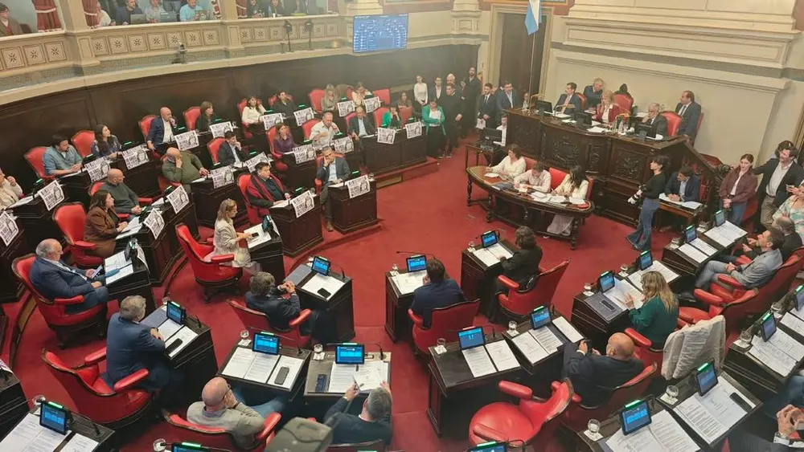

El Senado bonaerense postergó la sesión por los proyectos de salud de Kicillof
El Senado bonaerense recién tratará en noviembre los dos proyectos de salud enviados por Axel Kicillof y Nicolás Kreplak. Buscan llegar antes del Presupuesto.
A pesar de que en un momento se preveía que el Senado bonaerense encararía en octubre una sesión especial para sancionar los proyectos de salud enviados por Axel Kicillof, desde la Cámara que preside la vicegobernadora Verónica Magario dejaron entrever que la votación sobre las leyes para unificar el sistema sanitario provincial y crear una empresa de producción de medicamentos pasará para noviembre.
Según pudo saber este medio, en la última semana del mes, el Senado bonaerense solo tendrá actividad en comisiones, y todas ocurrirán el martes 27 de octubre: Salud Pública se reunirá a las 11 horas, Discapacidades a las 12, Usuarios y Consumidores a las 12.30 y Derechos Humanos a las 14. En este marco, no habrá sesión especial en este mes.
En las últimas semanas, en los pasillos del Palacio Legislativo retumbó fuertemente la versión de una sesión doble entre Diputados y el Senado bonaerense. La estrategia, consensuada por el peronismo, era que el recinto que dirige Alejandro Dichiara apruebe la ley de casinos online propuesta por La Cámpora; y que la Cámara alta brinde media sanción a las dos leyes de Kicillof.
Sin embargo, los tiempos no acompañaron los planes del oficialismo, que se tuvo que contentar con la sesión de la Cámara baja esta semana, en la que, entre otras cosas, se liberó la totalidad de la primera cuota del Fondo de Emergencia y Fortalecimiento de la Inversión Municipal (FEFIM) para gastos corrientes.
En lo que respecta a la sesión del Senado bonaerense, en la teoría el peronismo puede aprobar sin sobresaltos las propuestas empujadas por Kicillof y el ministro de Salud, Nicolás Kreplak, dado que cuenta con quórum propio gracias a sus 24 legisladores. No obstante, todo se sabrá recién en noviembre, antes de que el Presupuesto 2027 y la Ley Fiscal Impositiva se lleve puesto todo debate parlamentario.

De allí la necesidad de coordinar con Diputados para facilitar una rápida sanción en este año. El problema radica en que, a diferencia del Senado bonaerense, en la Cámara baja el peronismo no cuenta con los números suficientes para sancionar ambas leyes, por lo que se avizora un escenario complicado para el oficialismo, sobre todo teniendo en cuenta que la gran mayoría del arco opositor anticipó su rechazo a ambos textos.
Senado bonaerense: de qué trata el nuevo Sistema Integrado de Salud
El proyecto de ley para crear el Sistema Integrado de Salud (SIPBA) se trata de un viejo deseo de Cristina Kirchner que apunta a coordinar la atención entre los efectores públicos y privados, los municipios y las entidades de cobertura médica.
Entre sus principales herramientas para coordinar los efectores públicos con los privados en un mismo sistema, el proyecto de ley del SIPBA contempla la creación de la Red Bonaerense de Atención y Cuidados en Salud, organizada en tres niveles de complejidad. El esquema busca ordenar la atención según las necesidades de los pacientes y las prestaciones disponibles en cada establecimiento.
Además, el proyecto crea el Instituto Universitario Provincial de Salud “Floreal Ferrara” y el Registro Provincial de Financiadores de Salud. También establece que los establecimientos públicos y privados deberán garantizar la evaluación inicial y la estabilización de las personas que requieran atención médica de emergencia, sin discriminación.
Como órganos de coordinación, el Sistema Integrado de Salud contará además con el Consejo de Salud de la provincia (COSAPO), el Consejo Regional de Salud; la Mesa de Trabajo Permanente, de la que forman parte de los financiadores del sistema de salud; y la Mesa de Trabajo con participación de sindicatos, universidades y colegios profesionales.
El texto atravesó una etapa de negociaciones dentro del oficialismo y con representantes del sector sanitario privado. Después de que La Cámpora y otros actores plantearan reparos sobre distintos artículos, el kicillofismo consiguió introducir modificaciones y destrabar el tratamiento en las comisiones del Senado.
Según marcaron desde la Cámara alta, las modificaciones a este texto de Kicillof se orientaron a “precisar el alcance de las competencias del Estado provincial, establecer mayores garantías para los distintos actores del sistema y clarificar las condiciones de participación en la Red Bonaerense de Atención y Cuidados en Salud”.
Uno de los puntos suprimidos fueron como el artículo 6 inciso b, que permitía al Gobierno definir la ubicación de establecimientos sanitarios según las necesidades provinciales; y el artículo 8, que le daba facultades al Ejecutivo de determinar la necesidad sanitaria para incorporar establecimientos o tecnologías de salud, sobre la base de criterios geográficos, epidemiológicos y demográficos.
Otra de las críticas que más generó el SIPBA era que permitía que Provincia sobrepase las facultades de los municipios y las políticas sanitarias ordenadas por los intendentes. Por eso, los senadores eliminaron la exigencia de obtener una aprobación del SIPBA para construir hospitales y centros de salud y/o para incorporar servicios.
De la misma forma, los efectores miraban de reojo al SIPBA, principalmente porque la ley original contemplaba un artículo que establecía que las instituciones sanitarias tenían un “rol social”. Bajo esa excusa, la normativa le daba la potestad al Ejecutivo de, en casos excepcionales, exigirle al sector privado “realizar acciones sanitarias tendientes a paliar las circunstancias que motivan la demanda”, como lo puede ser el traslado de pacientes, ante la falta de camas en hospitales públicos. Ese postulado fue desechado en comisiones.
Senado bonaerense: los puntos clave del proyecto de empresa de medicamentos
El otro proyecto de ley de Kicillof y Kreplak busca crear el Centro de Industria Farmacéutica Bonaerense, una sociedad anónima con participación estatal mayoritaria. La iniciativa busca que la Provincia pueda investigar, desarrollar, producir, comprar, vender y distribuir medicamentos e insumos sanitarios; como así también elaborar vacunas, productos médicos, equipamiento, ingredientes farmacéuticos activos e insumos odontológicos, entre otros.
Uno de los puntos centrales es que la producción tendrá prioridad de abastecimiento para los servicios públicos de salud bonaerenses y los 135 municipios. Según los fundamentos del Ejecutivo, la empresa apunta a mejorar el acceso a tratamientos, reducir costos y fortalecer la capacidad provincial para responder a las necesidades sanitarias.
La iniciativa ya había sido impulsada por Kicillof en 2024 y obtuvo media sanción en Diputados, pero quedó trabada en el Senado bonaerense por falta de apoyos. La nueva versión incorporó modificaciones y, tras las negociaciones internas de Fuerza Patria, consiguió el despacho de las comisiones de Salud Pública y Legislación General.
El principal cambio es la incorporación de un artículo para establecer expresamente que el Gobierno será el titular del 99% del capital social de la empresa, mientras que el 1% podrá ser administrado por actores públicos o privados. Esto, ante los reparos del kirchnerismo de que la firma funcione como una SAPEM, es decir como una Sociedad Anónima con Participación Estatal Mayoritaria, de forma descontrolada.
Entre las principales razones que encontraron los senadores para modificar la redacción del proyecto de Kicillof, se encuentra la posibilidad de esta entidad de tomar deuda. En concreto, los senadores optaron por mantener el artículo para que la empresa de medicamentos pueda contraer préstamos y emitir títulos de deuda, pero se dejó en claro que “las operaciones deben estar vinculadas a su objeto social, contemplado dentro de su presupuesto y sujetos a los límites previstos en la Ley de Administración Financiera y Sistema de Control de Administración General del Estado”.
Como suele pasar en las entidades que tienen la facultad de buscar financiamiento por terceros, la oposición pidió crear una Comisión Bicameral de Seguimiento y Control, para que puedan solicitar informes, formular recomendaciones sobre el funcionamiento de la firma estatal, e intervenir en operaciones de endeudamiento extraordinario, como aquellos que excedan los límites de exposición cambiaria, superen los topes presupuestarios y comprometan activos esenciales.
Notas relacionadas

Legisladores buscan reconocer post mortem a Ricardo Soulé, leyenda del rock nacional
El diputado oficialista Ricardo Lissalde busca homenajear al fallecido Ricardo Soulé, fundador de Vox Dei y figura histórica del rock nacional.

Senador de La Plata rechazó el proyecto para cambiar el nombre del puerto: “No se discute”
El senador de Hechos - UCR Identidad, Marcelo Leguizamón, rechazó el proyecto que avanza en Diputados para cambiar el nombre del Puerto La Plata.
Procuración General reunió a legisladores bonaerenses, tras los reclamos de la Corte
Los titulares de ambas cámaras de la Legislatura bonaerense se reunieron con el presidente de la Suprema Corte, Sergio Torres. Qué proyectos pide el máximo tribunal.